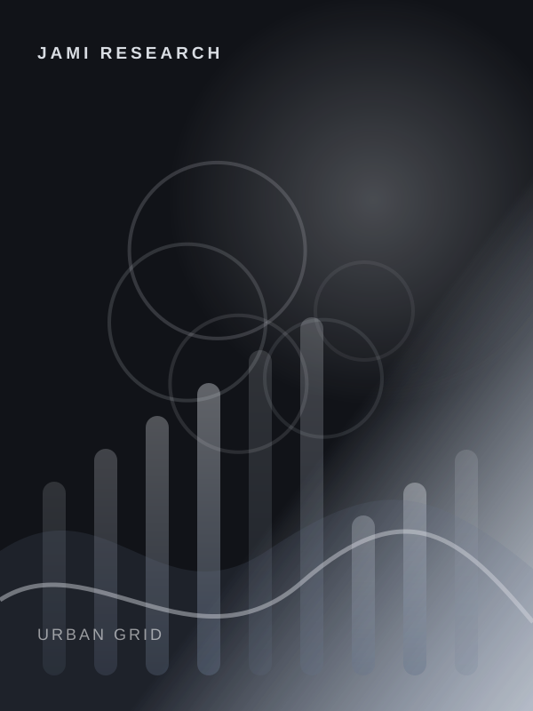
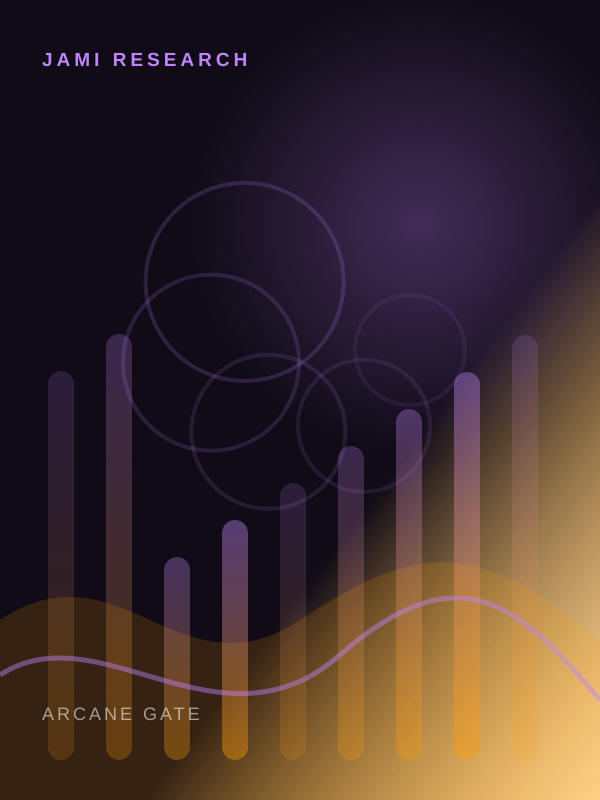

Performance research by game.
Every game named in this public library has its own cover, crawlable URL and game-specific JaMi Protect research page.
Cyberpunk 2077
FPS, stutter, graphics settings and PC performance research
Minecraft Java
FPS, render distance, memory and Java performance research

Grand Theft Auto IV
PC performance, frame pacing and stutter research
Batman: Arkham Knight
PC port performance, stutter and graphics research

Star Wars Jedi: Survivor
Traversal stutter, CPU/GPU load and settings research
Dragon's Dogma 2
CPU-heavy scenarios, frame rate and graphics research
Borderlands 4
Modern PC performance, FPS and graphics settings research
ARK: Survival Evolved
FPS, freezes, graphics settings and PC performance research
Marvel Rivals
FPS, latency, stutter and competitive settings research
Elden Ring
Frame pacing, stutter and graphics settings research
Red Dead Redemption 2
Quality versus performance tuning and graphics research

Baldur's Gate 3
CPU/GPU balance, FPS and graphics settings research